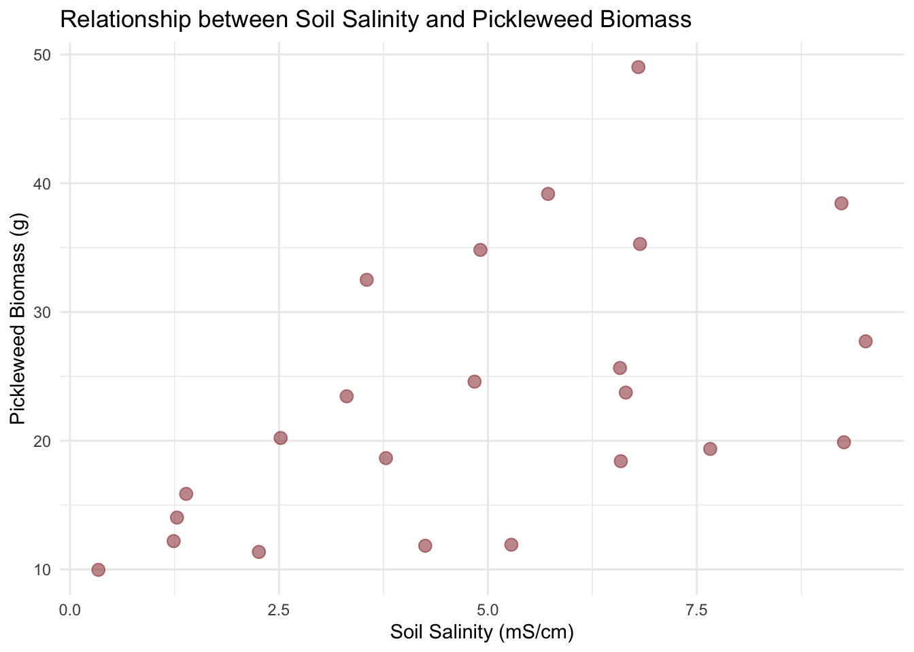
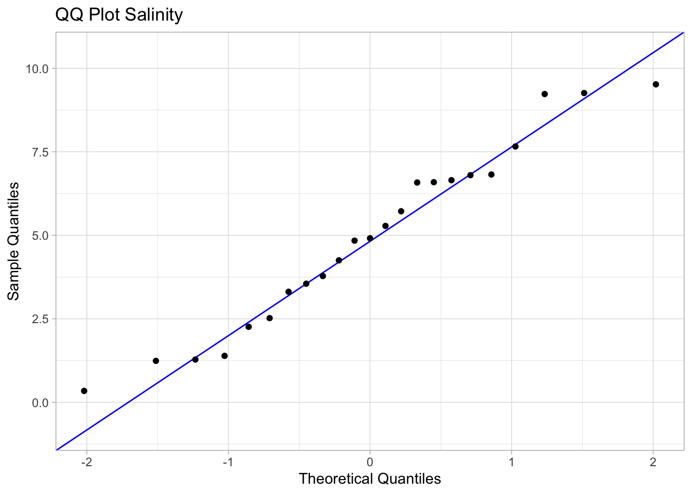
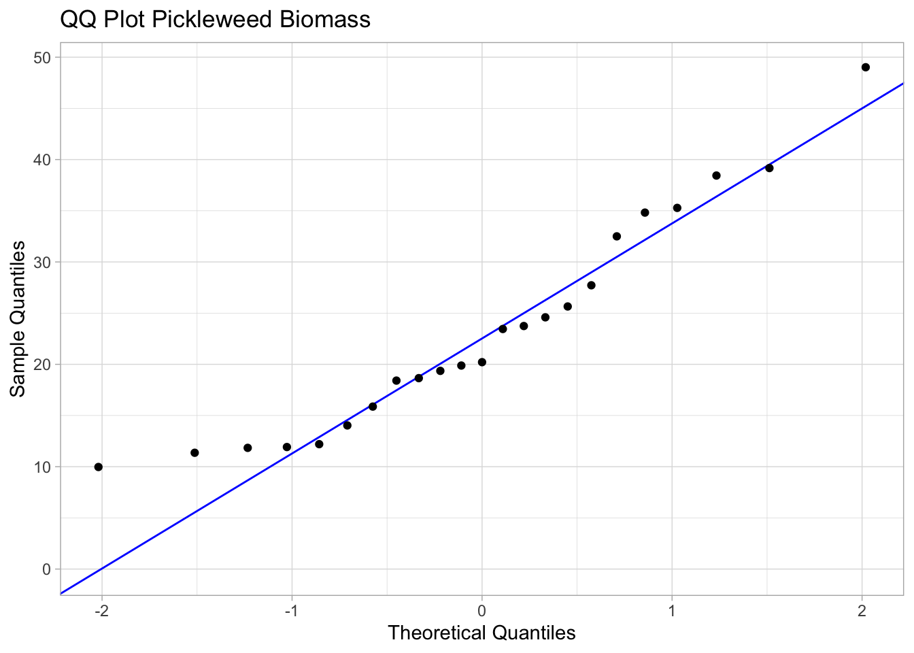
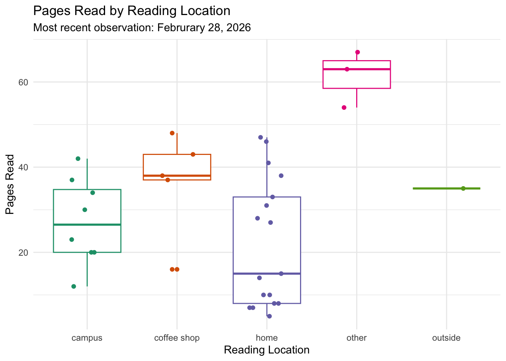
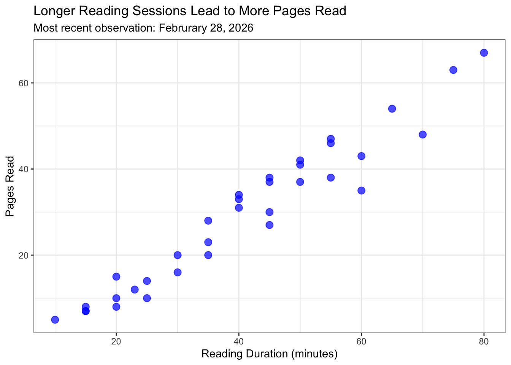

# read in packages here
library(tidyverse) # general use
library(here) # file organization
library(janitor) # cleaning data frames
#read in data here
salinity <- read.csv(here("data", "salinity-pickleweed.csv")) # store salinity data as salinity object
my_data <- read_csv(here("data", "Personal_Data_ENVS194DS.csv")) # read in personal data and save as an object called my_dataHomework 3
Link to my github: Github Repository
Set Up
Problem 1. Slough soil salinity
a. An appropriate test
The appropriate tests to determine the strength of the relationship between salinity and California pickleweed biomass are the Pearson’s correlation (r) test and Spearman’s rank correlation (p) test. The Pearson’s correlation is a parametric test that measures the strength of the relationship between salinity and biomass and assumes that observations are independent and both variables are continuous and normally distributed with a linear relationship. The Spearman’s rank correlation is non-parametric and measures the monotonic relationship between salinity and biomass for independent observations by evaluating whether the rank order of soil salinity values corresponds with the rank order of pickleweed biomass values (this test does not assume normality or a linear relationship).
b. Create a visualization
# base layer: ggplot
ggplot(data = salinity, # salinity data frame
aes(x = salinity_mS_cm, # salinity on x axis
y = pickleweed)) + # pickleweed biomass on y axis
# first layer: scatterplot
geom_point(size = 3, # larger points
color = "firebrick4", # color red
alpha = 0.5) + # slight transparency
# graph and axis titles
labs(x = "Soil Salinity (mS/cm)", # x axis title
y = "Pickleweed Biomass (g)", # y axis title
title = "Relationship between Soil Salinity and Pickleweed Biomass") + # graph title
theme_minimal() # different theme than default
c. Check your assumptions and run your test
Check for linear relationship between variables and monotonic relationship between variables
# base layer: ggplot
ggplot(data = salinity, # salinity data frame
aes(x = salinity_mS_cm, # salinity on x axis
y = pickleweed)) + # pickleweed biomass on y axis
# first layer: scatterplot
geom_point(size = 3, # larger points
color = "firebrick4", # color red
alpha = 0.5) + # slight transparency
# graph and axis titles
labs(x = "Soil Salinity (mS/cm)", # x axis title
y = "Pickleweed Biomass (g)", # y axis title
title = "Relationship between Soil Salinity and Pickleweed Biomass") + # graph title
theme_minimal() # different theme than default
Check that variables are continuous and normally distributed
# base layer: ggplot call
ggplot(data = salinity, # starting data frame
aes(sample = salinity_mS_cm)) + # y-axis for QQ plot (no x-axis)
# first layer: QQ reference line
geom_qq_line(color = "blue") + # color the QQ reference line blue
# second layer: QQ plot
geom_qq() +
labs(title = "QQ Plot Salinity", # descriptive title
x = "Theoretical Quantiles", # x axis label
y = "Sample Quantiles") + # y axis label
theme_light() # applying a new theme
# base layer: ggplot call
ggplot(data = salinity, # starting data frame
aes(sample = pickleweed)) + # y-axis for QQ plot (no x-axis)
# first layer: QQ reference line
geom_qq_line(color = "blue") + # color the QQ reference line blue
# second layer: QQ plot
geom_qq() +
labs(title = "QQ Plot Pickleweed Biomass", # descriptive title
x = "Theoretical Quantiles", # x axis label
y = "Sample Quantiles") + # y axis label
theme_light() # applying a new theme
To determine whether Pearson’s or Spearman’s correlation was appropriate, I checked two assumptions: (1) that the relationship between soil salinity (mS/cm) and pickleweed biomass (g) was linear and monotonic, and (2) that both variables were continuous and approximately normally distributed. I checked the linearity assumption visually using a scatterplot, and assessed normality using QQ plots for both soil salinity and pickleweed biomass. Both QQ plots showed points falling reasonably close to the reference line with no major deviations, and the scatterplot suggested a positive linear trend, indicating that the assumptions for Pearson’s correlation were sufficiently met.
Run Pearsons Correlation Test between soil salinity and pickleweed biomass
cor.test(salinity$salinity_mS_cm, # soil salinity (mS/cm) as first variable
salinity$pickleweed, # pickleweed biomass (g) as second variable
method = "pearson") # specifying Pearson's correlation as the method
Pearson's product-moment correlation
data: salinity$salinity_mS_cm and salinity$pickleweed
t = 2.8979, df = 21, p-value = 0.008605
alternative hypothesis: true correlation is not equal to 0
95 percent confidence interval:
0.1568265 0.7757682
sample estimates:
cor
0.5344778 d. Results communication
To evaluate the strength of the relationship between pickleweed biomass and soil salinity, I used a Pearson’s correlation test because both variables are continuous, approximately normally distributed based on the QQ plots, and the scatterplot suggested a linear relationship between the two variables. There is a statistically significant, moderate positive correlation between soil salinity and California pickleweed biomass, meaning that pickleweed biomass tends to increase as soil salinity increases (Pearson’s r = 0.53, t(21) = 2.90, p = 0.009, ⍺ = 0.05).
e. Test implications
Our analysis found a moderate positive relationship between soil salinity and pickleweed biomass, suggesting that plants growing in saltier soils tend to produce more biomass. This means that when selecting planting locations along the slough, prioritizing areas with higher soil salinity may support better pickleweed growth and restoration success. However, since this relationship is moderate rather than strong, other factors beyond salinity are likely also influencing plant growth and should be considered when making planting decisions.
f. Double check your work
# run Spearman rank correlation
cor.test(salinity$salinity_mS_cm, # soil salinity (mS/cm) as predictor
salinity$pickleweed, # pickleweed biomass (g) as response
method = "spearman") # specifying Spearman's correlation as the method
Spearman's rank correlation rho
data: salinity$salinity_mS_cm and salinity$pickleweed
S = 824, p-value = 0.003426
alternative hypothesis: true rho is not equal to 0
sample estimates:
rho
0.5928854 Both Pearson’s correlation (r = 0.53, p = 0.009) and Spearman’s rank correlation (ρ = 0.59, p = 0.003) led to the same decision to reject the null hypothesis that there is no relationship between soil salinity and pickleweed biomass. Both tests indicated a moderate positive relationship between the two variables, suggesting that as soil salinity (mS/cm) increases, pickleweed biomass (g) tends to increase as well. While Pearson’s evaluated the linear relationship between the raw values of the two variables, Spearman’s evaluated the monotonic relationship between their rank orders, yet both arrived at the same conclusion.
Problem 2. Personal Data
a. Updating your visualizations
my_clean_data <- my_data |> # create object my_clean_data from my_data
clean_names()Visualization of reading location (categorical predictor variable) vs pages read (response variable)
# base layer: ggplot
ggplot(data = my_clean_data, # use clean data
aes(x = reading_location, # categorical predictor on x-axis
y = pages_read, # response variable on y - axis
color = reading_location # give each reading_location a different color
)) +
# first layer: boxplot
geom_boxplot() +
# second layer: jitter plot
geom_jitter (height = 0, # no vertical jitter
width = 0.2) + # narrowing width of jitter
labs(x = "Reading Location", # x-axis title
y = "Pages Read", # y-axis title
title = "Pages Read by Reading Location", # graph title
subtitle = "Most recent observation: Februrary 28, 2026") + # most recent date)
scale_color_brewer(palette = "Dark2") + # use Dark2 color palette from colorbrewer project
theme_minimal() + # set theme different from default
theme(legend.position = "none") # remove legend
Visualization of reading duration (continuous predictor variable) vs pages read (response variable)
#base layer: ggplot
ggplot(data = my_clean_data, # use my_clean_data
aes(x = reading_duration, # continuous predictor variable on x-axis
y = pages_read)) + # response variable on y-axis
# first layer: Add scatterplot points
geom_point(color = "blue1", # use different color than default
size = 3, # set point size
alpha = 0.7) + # make points more transparent
labs(x = "Reading Duration (minutes)", # x-axis title
y = "Pages Read", # y-axis title
title = "Longer Reading Sessions Lead to More Pages Read", # graph title
subtitle = "Most recent observation: Februrary 28, 2026") + # most recent date
theme_bw() # change theme from default
b. Captions
Figure 1. The distribution of pages read by reading location (campus, coffee shop, home, other, and outside) across reading sessions is represented by the boxplot. Each point represents a reading session. Reading sessions in “other” locations had the highest median pages read (around 63 pages), while home reading sessions showed the most variability and lowest median (around 15 pages).
Figure 2. The relationship between reading duration (minutes) and pages read across all reading sessions is represented in a scatterplot. The most recent observation was February 28, 2026, and each blue point represents a reading session.